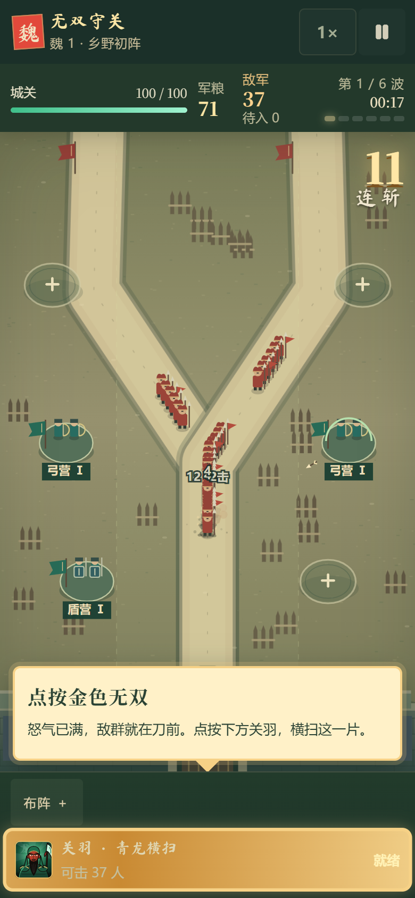
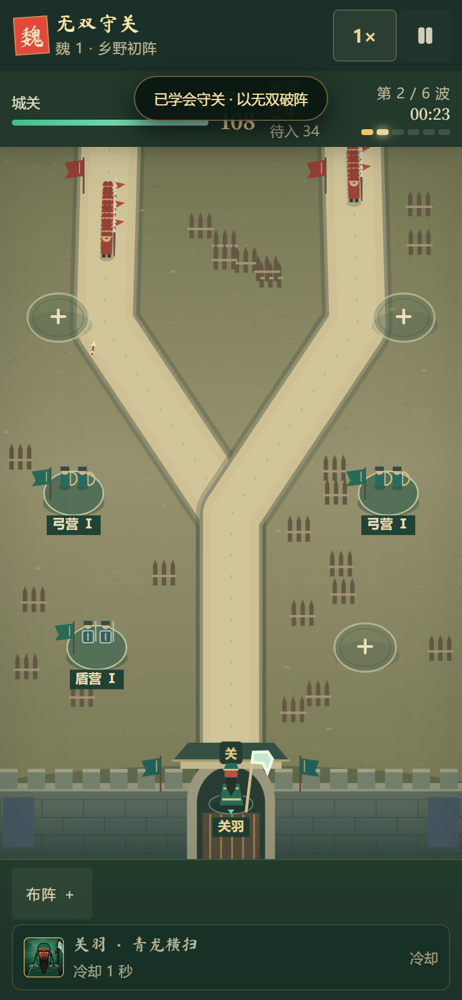
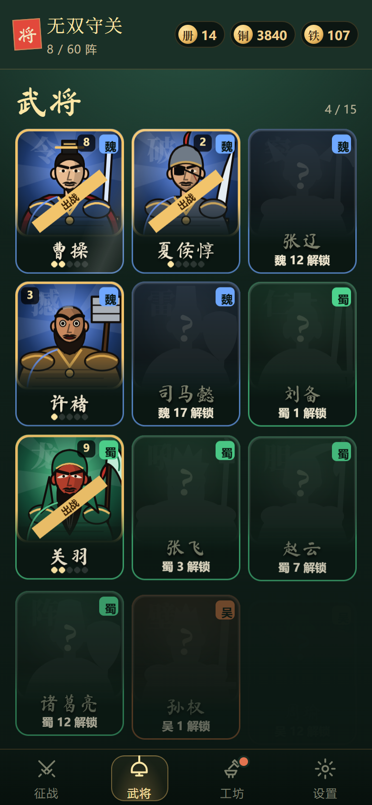

大厅头像已经有了描墨、大头和鲜明的兵器，战场还停在几何色块阶段：武将靠头顶的字认，军营靠下方的名牌认，敌兵挤成一串、看不清兵种。这一稿统一造型标准，补全十五将的动作，重画六类军营，并把敌兵从“串”改成“阵”。技能形状与数值见 技能重做稿，本稿的无双动作按那份时间轴对齐。
截图来自当前版本的真实浏览器回归（docs/v1/playtest/v2-impl），左上角标出对应的问题编号。



头像是描墨大头胸像，战场是无描边的梯形小人。三位武将两处拿的兵器不同（许褚 锤 / 斧，甘宁 弓 / 双戟，吕蒙 书卷 / 双刀），孙权战场多拿一块令牌。夏侯惇头像戴盔插红缨，战场只有一条头带；除关羽外十四人战场肤色相同，张飞的黑脸只在头像里有。原因：HERO_ART 和 PORTRAIT 是两张互不引用的表。
六类军营共用一个绿色椭圆底座，区别只在里面 8px 高的小人手里那根线。实机尺寸下，盾营和弓营要读下方“盾营 Ⅰ / 弓营 Ⅰ”名牌才分得清。
身体是一个梯形色块，头只有 12px，没有描线。认人靠头顶的“关”字和脚下的“关羽”名牌，两层文字说的是同一件事。
敌兵沿道路中线行走，V1 战场直接按引擎坐标绘制、没有任何横向错开，路宽 36。盾营把速度降到 0.46 后前后间距被压缩，一路敌人叠成一条红线。马、盾、弓、旗这些兵种特征都在身体中段，被下一个人挡住。
战场小人不再单独设计，直接从头像参数（PORTRAIT）生成：同一个肤色、同一顶冠盔、同一把兵器、同一种描墨。头像是“近景”，战场是“远景”，读到的是同一个人。
头高占全身 37%（现版 18%）。战场武将总高 46 世界单位，头宽 18，大约是现在的 1.5 倍。手机上脸部仍有 20 CSS px，眼罩、胡须、冠盔都看得见。
和头像一样用 #100c09 外描，内部只用 1px 半透明墨线分区。所有武将、军营兵、敌兵共用这一条规则，三者站在一起不会像三套画风。
兵器是第一识别点，必须超出身体轮廓。关羽刀、张飞矛、赵云枪往上伸，许褚锤、夏侯惇刀往侧面伸，诸葛亮、周瑜、司马懿的扇子举在脸旁。不一致的武将统一用头像里的兵器。
去掉头顶单字和脚下名牌。己方统一用青玉色脚环（怒气弧沿环填充，现有做法保留），领衔环大一圈。点按或长按武将才弹出姓名卡。
每个武将必须在灰度、46px 下和另外 14 人分得开。下方十五将对照可切换灰度与实机尺寸检查。
左为现有大厅头像，右为按本稿规则生成的战场造型（示意）。红字标出现版两处不一致的地方。
每人四个状态：待机、怒满、普攻、无双。普攻动作长度必须短于该武将的攻击间隔，出手帧对齐引擎出弹时刻；无双在 0.9 秒演出锁内完成，命中帧对齐技能稿的命中时刻。武将没有生命值，不做受击、倒地、行走；只有夏侯惇、许褚、张辽三人因技能需要新增跳跃或冲锋帧。
| 武将 | 待机 · 6 帧循环 | 普攻（出手帧） | 无双关键姿势（命中帧） | 帧数 |
|---|
一个营就是一个小阵地。底座、外轮廓、颜色、兵和动作五层都要不同，任意遮掉两层仍能认出。名牌改为只在选中时显示，平时只留等级标记（Ⅰ Ⅱ Ⅲ 用旗数表示）。
| 军营 | 底座与轮廓 | 主色 | 兵与动作 | 攻击时的提示 | 等级变化 |
|---|
敌兵不再全部压在道路中线。每个敌人出生时分到一条“列位”，在路宽内左右错开；被减速挤压时，列位间距自动拉开。这只改绘制位置，不改碰撞、命中和路径进度。同时把兵种特征移到头顶和外轮廓上，被前一个人挡住身体也能认出来。
lane = hash(enemyId) % 5，同一个敌人始终在同一列，不会左右乱跳。| 兵种 | 头顶 / 轮廓特征 | 体型 |
|---|
hero-portraits.js 的 PORTRAIT 成为唯一来源，删掉 HERO_ART.gear / silhouette。战场绘制读 skin / head / beard / weapon / cloth / trim，和头像同参数。
武将、军营兵、敌兵按“状态 × 帧”预渲染到离屏画布（1× / 2×），战斗中只做 drawImage。160 人同屏时绘制开销低于现在逐个画路径。
武将：待机 6 + 普攻 4–6 + 无双 8–12，约 20 帧 × 15 人。军营兵：每类待机 2 + 攻击 3。敌兵：行走 4 帧 × 7 类，首领母型另加 2 帧挥击。
战场不再常驻武将名牌、营名牌。点按出现姓名卡（2 秒消失），布阵面板、技能按钮和教程里照常显示文字。读屏与键盘焦点仍朗读名称。
碰撞半径、命中判定、路径进度、营位坐标、技能数值。列位偏移和放大的兵器都只影响画面，v1-engine.js 不需要动。
① 灰度 + 实机尺寸下 15 将两两可辨；② 遮住名牌后 6 营 5 秒内认全；③ 第 1 关“盾营减速后”截图中，能数出每个普通兵和精锐；④ 160 人压测 60 FPS 设备不掉帧。
本稿默认以头像为准：许褚 锤、甘宁 弓、吕蒙 书卷、孙权只拿剑。代价：甘宁的普攻从近战改成射箭的样子（数值不变，射程 200 本来就偏远）。如果希望战场版为准，就要改头像。
新玩家第一次见到某位武将时，可以保留 3 秒名牌再淡出，之后只靠造型。本稿默认如此。
同样人数铺开后，路面被占满的面积变大，体感压力会上升。这是有意的（敌潮更有分量），但要配合技能稿一起回归。
按本稿全部落地：武将约 300 帧、军营 6 套底座 + 30 帧兵、敌兵约 30 帧。可以分三批：先敌兵列位（纯代码，立即见效）→ 军营 → 武将。
本页所有战场画面都是浏览器里用 Canvas 现场绘制的示意稿，表达比例、轮廓与动作节奏，不是最终位图。头像来自现有 heroPortrait() 的离线导出（battle-art-redesign-art.js）。